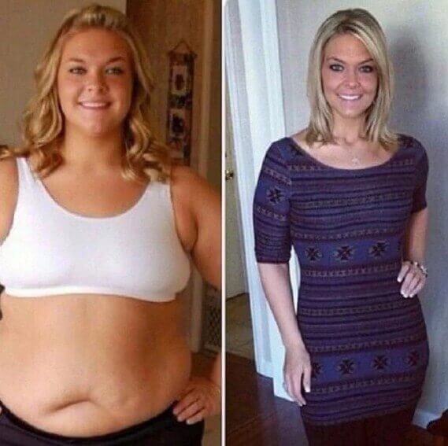

Si kam humbur 54 kg dhe kam mbajtur familjen, dashurinë dhe burrin
Dua të tregoj historinë time, e cila do të ndihmojë shumë vajza të ruajnë dashurinë dhe familjen. Emri im është Amanda. Unë jetoj në qytetin e Peshkopisë. Me sa mbaj mend, kam qenë gjithmonë një vajzë topolake. Prandaj, asnjëherë nuk kam qenë e suksesshme me seksin e kundërt.
Unë u përpoqa disa herë të humb peshë - mbajta dietë, shkova në palestër, por asgjë nuk ndodhi. Nëse humbisja disa kilogramë, i fitoja përsëri ato.
Në fakt, në mënyrë që një person mbipeshë të mbajë peshën e tij normale, është e nevojshme që vazhdimisht të përmbahet në dietë dhe të përfshihet rregullisht në ushtrime fizike. Dhe kjo kërkon vullnet të hekurt. Fatkeqsisht, unë nuk e kam.

26 vjeç. Pesha 118 kg, lartësia 169 cm
Kur isha 26 vjeç u njoha me Altinin. Papritur, vura re që pavarësisht kilogramëve të mi (në kohën që peshoja 118 kg me lartësi 169 cm), ai ishte i interesuar për mua. Kisha frikë ta besoja! Por ndodhi një mrekulli - Altini më propozoi për t'u martuar me të, dhe ne u martuam!

Duhet të them që Altini nuk ishte i dobët, por nëse mund të thuhet, i mirëushqyer. Por sigurisht ai nuk dukej aq keq sa unë.

Unë dhe Altini përpara SlimFit
Menjëherë pas dasmës, Altini dhe unë deshëm të bënim fëmijë. Por shtatzënia ime e parë përfundoi në një abort 3-mujor. Pastaj, gjashtë muaj më vonë, ndodhi një tjetër. Shkuam në kryeqytet, në qendrën e planifikimit të familjes, kaluam testimet e nevojshme. Altini doli të ishte në rregull. Dhe ata më gjetën shumë të lartë në hormonin leptin, i cili shkaktonte abortet. Mjekët më thanë: "Nëse doni të keni një fëmijë, duhet të humbni peshë!" Por si?
Burri im dhe unë mësuam në lidhje me dietën e re që ishte në modë. Thelbi i saj: në vend të karbohidrateve, duhet të mbështeteni në proteina dhe yndyrna. Pastaj mëlçia fillon të prodhojë substanca të veçanta, të cilët në mënyrë aktive djegin yndyrën e trupit, duke e shndërruar atë në energji. Vendosa ta provoj. Për të më mbështetur, burri im gjithashtu vendosi të fillojë këtë dietë.
Meqë ra fjala e ndihmoi. Në 3 muaj arriti te humbiste 25kg dhe u transformua ne një burrë shumë të pashëm.
Për mua, dieta nuk nuk shkoi dhe aq mirë. Në fund të fundit, ajo përfshin jo vetëm konsumin e ushqimeve të yndyrshme, por edhe periudhat e agjërimit, për të stimuluar prodhimin e trupave të ketonit dhe madje edhe të shkuarit në palestër. Altini është një njeri me dëshirë të fortë dhe ka qenë në gjendje ta detyrojë veten të bëjë të gjitha këto. Për fat të keq, unë nuk kam qenë në gjendje ta mposht veten. Uria ishte e paimagjinueshme për mua. Dhe unë shkova në palestër për të mbështetur Altinin në mënyrë që ai të mos shikonte me vajzat e dobëta.

Unë shkova në palestër për te nxitur veten dhe për të ndjekur Altinin
Papritur kuptova: në fund të fundit, Altini mund të më lërë! Ka kaq shumë vajza elegante përreth! Isha e dëshpëruar! Cfarë të bëja? Si ta mbaja dashurinë dhe familjen?
Këtu më erdhi në ndihmë... Altini! Ai mësoi se në Tiranë po rekrutonin një grup eksperimental për të provuar një ilaç të ri, parimi i veprimit i të cilit bazohet në dietën keto. Vetëm se ka një ndryshim domethënës. Nuk është e nevojshme të hani ushqime të yndyrshme dhe më pas të uriteni që trupi të prodhojë ketone. Kjo përgatitje tashmë përmban substanca natyrale të ngjashme në veprim me trupat keton.
Ky medikament quhet Slim Fit. Baza e saj janë trupat ketone bimore. Këto substanca nxirren nga përbërësit natyrorë të bimëve, prandaj nuk dëmtojnë trupin dhe, për më tepër, kanë efikasitet jashtëzakonisht të lartë - në veprim ata i tejkalojnë trupat e tyre të ketonit njerëzor më shumë se 15 herë!
Shkuam direkt në Tiranë dhe unë arrita të regjistrohem në këtë grup eksperimental. Më ndihmuan nga dokumentacioni i kartës sime shëndetësore të bërë në Qendrën e Planifikimit të Familjes ku thuhet që duhet të humb peshë për ta ngjizur dhe për të lindur një fëmijë.
Si humba peshë me Slim Fit
Do ta them që në fillim, se humbja e peshës nuk ka qenë kurrë më e rehatshme sesa me këtë ilaç! Janë kokrra që mund të pihen si paracetamol. Nuk ka kufizime ushqyese. Përveç kësaj, mjekët insistojnë që një person vazhdoi te ushqehej në të njëjtën mënyrë si bënte para se të merrte Slim Fit, në mënyrë që të mos stresonte trupin.
Kështu që, fillova të merrja Slim Fit. Pesha ime në fillim të eksperimentit ishte 118 kg.
Në javën e parë kam humbur vetëm 2 kg. Një rezultat shumë modest. Por mjekët thanë se kështu duhet të ndodhte. Trupi është rindërtuar për të djegur në mënyrë aktive yndyrën. Por në javët në vijim humba rreth 1 kg në ditë! Unë u shkriva fjalë për fjalë para syve të mi! Unë me entuziazëm u rehatova dhe regjistrova trupin e tij të ri në foto.

Në foton e parë, peshoj 118 kg dhe përpiqem pa sukses të humb peshë në palestër. Në foton e dytë, pesha ime është 86 kg. Ka një humbje peshe prej 4 javësh. Në foton e tretë, pesha ime është 64 kg. Kjo pas 6 javësh të marrjes së Slim Fit.
Por edhe më shumë kënaqësi nuk më dha pamjen time të re, por admirimin për mua, që pashë në sytë e Altinit!
Pas 6 javësh humbje peshe, peshova 64 kg. Mjekët thanë se ishte pesha ideale për mua dhe unë pushova së përdoruri Slim Fit.

Një vit më pas
Cfarë ndodhi gjatë vitit që unë jetoja me trupin tim të ri. Më e rëndësishmja, pesha ime mbeti e njëjtë - 64 kg. Mjekët nuk kanë mashtruar. Slim Fit ka arritur të normalizojë metabolizmin tim dhe tani nuk kam nevojë të marr asgjë për të ruajtur peshën time normale.
Mjekët gjithashtu rekomanduan të fillojnim përpjekjet për të konceptuar një fëmijë 12 muaj pas përfundimit të programit të humbjes së peshës. Organizmit i duhet kohë për të ristrukturuar aktivitetet e tij në një peshë të re. Altini dhe unë e bëmë atë. Prisnim një vit dhe shijuam njëri-tjetrin.

Kështu që ne jemi tani - me pushime në Itali
Dhe tani gjëja më e rëndësishme: Unë jam shtatzënë! Do të kem një fëmijë dhe tani jam absolutisht e lumtur!

Komenti i një specialisti

Doktor i Shkencave Mjekësore, Profesor, Zëvendësdrejtor i Qendrës së Planifikimit Familjar të kryeqytetit
Slim Fit u zhvillua nga një ekip shkencëtarësh me mbështetjen e OBSH-së. Ai mishëron të gjitha zhvillimet më të fundit në fushën e metabolizmit në trupin e njeriut.
Karakteristikat kryesore të Slim Fit:
1. Siguria e plotë e ilacit. Eshtë bërë nga substanca bimore dhe nuk kërkon dieta, domethënë nuk ekziston rreziku për të privuar një person nga ushqimi i mirë dhe marrja e të gjitha substancave të nevojshme në trup.
2. Djegin në mënyrë aktive yndyrën në të gjitha pjesët e trupit, përfshirë zonat me probleme - vithe, anësore, etj.
3. Shfaqet shumë energji, gjendja shpirtërore përmirësohet.
4. Metabolizmi normalizohet. Pas përfundimit të marrjes, personi nuk rifiton peshë.
5. Përmirëson kushtet e lëkurës dhe flokëve
6. Balancimi hormonal është normalizuar, gjë që bën të mundur konceptimin e një fëmije më shpejt se për gratë në mbipeshë
Unë dhe kolegët e mi nga qendra e planifikimit të familjes në Tiranë rekomanduam që shumë nga pacientët tanë të marrin pjesë në grupin studimor gjithëpërfshirës Slim Fit, i cili përfshinte 167 vullnetarë të mbipeshë të klasës 1-4. Si rezultat i marrjes së Slim Fit, humbja e peshës u regjistrua në 100% të pjesëmarrësve. Në të njëjtën kohë, 98% normalizuan plotësisht peshën e tyre.
Bazuar në rezultatet e testeve, ne kemi rekomanduar të lejojmë shitjen e Slim Fit në Shqipëri. Për ta furnizuar me shpejtësi këtë ilaç tek italianët, së bashku me zyrën e OBSH në vend, ne organizuam shitjen e Slim Fit përmes versionit në gjuhën shqip të faqes zyrtare.
Aktualisht në Slim Fit ka një zbritje 50%. Periudha e uljes së shitjes është e vlefshme deri në përfshirë.
Kam jetuar gjithmonë në Korcë. Për shkak të punës time, kam tendencë mbipeshe dhe një herë, aq shumë kohë më parë sa më duket se kjo nuk është e vërtetë, kam peshuar gati 130 kg. Kam porositur Slim Fit për humbje peshe dhe tani peshoj 68 kg të paimagjinueshme. Rezultati është minus 62 kg në 2.5 muaj! Pesha nuk ndryshon! Dua t'ju tregoj fotot - Rezultati i luftës sime kundër peshës së tepërt.
Vajza, porosita "Slim Fit" - është diçka! Unë e kam pirë për një muaj. Para së gjithash, kam humbur 18 kg !!! Lëkura nuk varej. Yndyra fillon fillimisht aty ku duhet . Shumë e kënaqur me këtë medikament. Unë e kam rekomanduar atë për të gjithë miqtë e mi dhe kjo i ka ndihmuar ata të gjithë
Kanë kaluar 2 javë nga përfundimi i kursit tim për humbje peshe me Slim Fit. Unë u shpëtova nga 37 kg shtesë! Unë jam shumë mirënjohës për ju! Më pëlqeu vërtet të humbja peshë gjatë natës - fle dhe humb peshë! E mora në faqen zyrtare tre muaj më parë dhe ndjeva efektin në ditët e para.
Jam plotësisht dakord. Produkt i shkëlqyeshëm dobësimi! Dhe nëse e dinit se çfarë lloj gëzimi ndjeheni kur hypni në peshore në mëngjes, dhe atje rezulton më pak 6 kg! Ja se si kam humbur peshë me të
Unë e mora pakon me ilaçin Slim Fit vetëm dje. Për kaq kohë dyshoja !! Thjesht një mënyrë shumë e pazakontë dhe revolucionare për të humbur peshë. Kam lexuar shumë për këtë dietë keto, në mënyrë që të mos lëndoj veten !! Është kaq e mahnitshme - hani yndyrë dhe humbni pesh, si është e mundur ?? Dhe rezulton, që mund të jetë kështu! Kam porositur ilaçin, nuk mund të prisja më gjatë ... Në përgjithësi, humba shumë peshë! Faleminderit për artikullin dhe për linkun në faqen e porosisë, mirë që nuk m'u desh të kërkoja gjatë!
Slim Fit dhe fitnesi japin një rezultat të shkëlqyeshëm. Unë nuk mendoj për kalori, kam ulur vetëm sasinë e ushqimit dhe kam ngrënë 4-5 herë në ditë. Unë nuk kam refuzuar përdorimin e produkteve të miellit, thjesht e kam ulur atë në minimum. Unë ha gjithçka që dua, vetëm brenda kufijve të arsyeshëm.
Kam humbur 51 kg në 3 muaj, pa dieta shtesë dhe pa asnjë grevë urie mërzitëse, kam ngrënë gjithçka, dhe gjithçka falë Slim Fit!
Përshëndetje të gjithëve, unë gjithashtu kam humbur peshë me Slim Fit. E mora një vit më parë nga motra ime nga jashtë, në atë kohë, në vendin tonë nuk ishte akoma ... Sinqerisht, as nuk ëndërroja për një rezultat të tillë! Mendoja se ishte e pakuptimtë dhe nuk dëshiroja të filloja, por motra më bindi ta provoja. Fillova ta përdorja, dhe shumë shpejt m'u desh të vrapoja në dyqan për të ndryshuar veshjet, pantallonat filluan të bien)))))))))))) Unë arrita të humbja 48 kg në 4 muaj !! !! !! Tani pesha është stabilizuar dhe nuk ndryshon !!! Të them që jam e lumtur është pak !! :))) Unë rekomandoj që të gjithë ta provojnë! Në të paktën 2 javë do ta shihni vetë rezultatin! Unë rekomandoj Slim Fit për të gjithë, vetëm ai më ka ndihmuar.
Nga 96 kg kam shkuar ne peshën 60kg për 2.5 muaj! Dhe e gjitha fale Slim Fit !!
Kam porositur 2 kurse të ilacit! Për veten dhe shoqen time. Mënyra është e shkëlqyeshme, në vetëm një muaj e gjysmë kam arritur të humbas gati 18 kg. Përshëndetje! eshte fitorja ime personale !!! Jam krenare per veten time !!!
Dhe për më shume. Ilaçi është i sigurt! Unë jam alergjik ndaj disa substancave. Asnjë reagim!
E mora pakon e Slim Fit . Kanë kaluar dy ditë! Pasi fillova të marrë këtë ilaç, me të vërtetë humba në peshë. Cuditërisht, asgjë nuk është bërë e squllur, muskujt jane të tonifikuar, pa shenja strijash në lëkurë! Është e vërtetë, sikur të kem bërë liposuction! Këtë rezultat e mora në një muaj e gjysmë - minus 20 kg. Nuk kishte dietë, hëngra atë që doja.
Faleminderit! Pako ime ka kaluar pak më gjatë, por rezultati është një mrekulli. Vëllimet janë në rregull! Epo, sigurisht që nuk ha shumë me ëmbëlsira por pjesa tjetër nuk është e kufizuar. Dua patate dhe ha patate.
Super!
Unë konfirmoj që metoda është efektive. Kam humbur peshë me Slim Fit dhe duhet të them që me shumë sukses, në vetëm dy muaj shpëtova nga 25 kg! Shumë mbresëlënëse!
Shume faleminderit për Slim Fit
I hodha tutje 30 kg falë këtij ilaçi, siç rekomanduat. Më pëlqen që është një produkt natyral!
Unë konfirmoj që metoda është efektive. Kam humbur peshë edhe me këtë ilaç dhe gjithçka shkoi mirë, në një muaj u shpëtova nga 19 kg! Shumë mbresëlënëse!
Pluhuri ndihmon vërtet. Unë e zbulova vetëm tre muaj më parë. Tani nuk kam probleme me mbipeshën, por peshoja 85 kg)) Për ata që tashmë janë lodhur nga kilogramët shtesë dhe që më në fund dëshirojnë të humbin peshë, nuk ka mënyrë më të mirë.
Bleva gjithashtu një kurs të humbjes së peshës Slim Fit, më pëlqen shumë .)
Më pëlqeu shumë. Humba peshë shumë shpejt me ketë ilac. Rezultatet janë mbresëlënëse.
E porosita) dhe riktheva përsëri e dobët. Është e përshtatshme që dorëzimi bëhet nga korrieri dhe pagesa bëhet vetëm pasi të keni marrë personalisht duart. Ata sollën brenda një jave dhe ja rezultati)
Është shumë e lehtë për mua të toleroj humbjen e peshës me këtë ilaç, ndihem mirë. Dhe më parë, unë isha tërë kohës e zemëruar në shtëpi dhe në punë. Burri qesh, por ndonjëherë edhe ai gjithashtu nuk mund ta duronte. Prej 3 javësh kam humbur peshë me Slim Fit, kështu që rezultati tashmë është më pak se 19 kg. Shëndeti im është thjesht fantastik, sikur të isha duke fluturuar në hapësirë :)
Jeni shumë të mirë të gjithë. Jam e inspiruar nga fotot, nga historia e autorit deri tek porositja e pluhurit vet.
Hajdee, ish të shëndoshë. Foto zjarr fare!
S'jemi ne, ky ilac është shumë i mirë. E konfirmoj, me Slim Fit nuk dua të ha, uria zhduket. Mund të bësh të gjitha punët e tua qetësisht dhe të mos shqetësohesh nga mendimet, se cfarë të hash. Sidomos mire, duke qenë se edhe gjatë punës s'e ke mëndjen te ushqimi. Pas lindjes ky ilac u tregua shumë i dobishëm.
Unë arrita të humb peshë deri në 24 kg. Pesha ime ishte 94 kg. Mbaj mend sa e vështirë ishte për mua në fillim, shqetësohesha nëse do të funksiononte apo jo, por është vërtëtë efektive . Është e vështirë kur nuk ju mbështesin, veçanërisht kur pesha juaj është e madhe.
Vajza, mos dëgjoni askënd që ju thotë së nuk mundeni. Unë ja dola! Dhe mund të bëni edhe më shumë! Unë rekomandoj Slim Fit për të gjithë, më ka ndihmuar shumë.